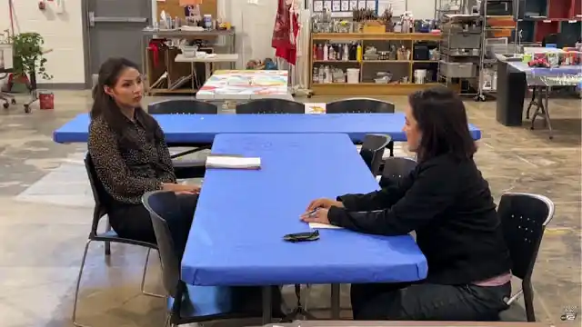
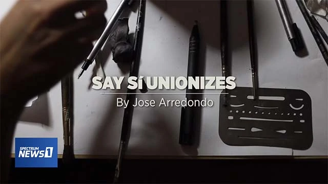
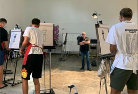

Board of arts nonprofit SAY Si ‘cannot’ apologize to staff as contract negotiations near
Texas Public Radio, Josh Peck

Workers at arts nonprofit SAY Sí seek seat at the table
Megan Stringer, Axios

SAY Sí workers look to bargain first contract after union win
Texas Public Radio, Josh Peck

After-school art program Say Si recognized as union by National Labor Relations Board
KSAT 12, Camelia Juarez
SAY Sí wins proposed bargaining unit; nonprofit board offers voluntary recognition
Texas Public Radio, Josh Peck
SAY Sí board chair says nonprofit spent $35,000 on firm his staffers claim is a union-buster
Texas Public Radio, Josh Peck

Workers' unionizing efforts prove long, challenging against SAY Si's board of executives
KSAT 12, Camelia Juarez
SAY Sí workers say board of directors contradicting core values in effort to fight unionization efforts
Texas Public Radio, Josh Peck

Workers at San Antonio nonprofit SAY Sí demand the group's board cut ties with anti-union law firm
San Antonio Current, Karly Williams
San Antonio arts nonprofit SAY Sí's board contests bargaining unit, stalling union election
San Antonio Current, Karly Williams

San Antonio art nonprofit's employees unionize
Spectrum News, Jose Arredondo

Seeking to influence nonprofit's future, SAY Sí employees work to unionize
San Antonio Report, Waylon Cunningham
